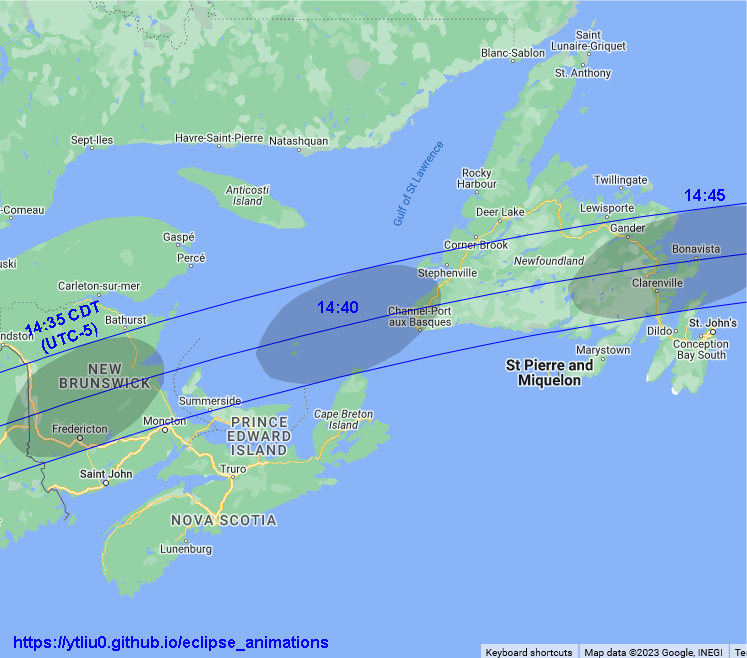

The total solar eclipse on April 8, 2024 will be visible along a path of totality that will pass through Mexico, United States and Canada. Most of the places in North and Central American will be able to see partial eclipses.
Total solar eclipse is visible at locations at which Moon's umbra (Moon's dark shadow) passes through. Moon's umbra will appear on Earth at 16:39 UT (9:39 PDT, 11:39 CDT, 12:39 EDT) in the Pacific ocean. It will reach Mexico around 18:07 UT and enter the US around 18:28 UT. In the next hour and a half, it will traverse 13 US states and Canada. The umbra will exit Earth at 19:56 UT in the Labrador Sea in the North Atlantic Ocean.
Contents
In this orthographic map, the red dot at the center is the location of the greatest eclipse, where Moon's shadow axis is closest to the geocenter. The black dot near upper right is the north pole. The purple lines are the limits of Moon's penumbra. The three blue lines across the map center are the northern limit of umbra (upper line), central line (middle line), and southern limit of umbra (lower line). Total solar eclipse is visible inside the narrow strip bounded by the northern and southern limits of umbra. The teardrop-shape brown line on the left (west) is the locus of points where the eclipse begins/ends at Sunrise. The middle red line is the locus of points where the maximum eclipse occurs at Sunrise. The teardrop-shape brown line on the right (east) is the locus of points where the eclipse begins/ends at Sunset. The middle red line is the locus of points where the maximum eclipse occurs at Sunset. No eclipse is visible beyond the region bounded by the brown and purple lines. The orange red lines with the same shape as the penumbra limits are lines of equal eclipse magnitude, and the magnitude is indicated (25%, 50%, 75%) above each line.
In this animation, the green region is Moon's penumbra. The dark region inside the umbra limits is Moon's umbra. The dark region outside the penumbra is Earth's night side.
My Eight Millennia of Eclipses website has an orthographic map with animation. You can also click on the map to show a prediction of the eclipse circumstances at a location.
In the following maps, the limits of umbra and central line are shown together with Moon's umbra at different times. Lunar limb corrections are included and are calculated based on the data from the Lunar Reconnaissance Orbiter.
Nayarit, Sinaloa, Durango, Coahuila and Texas.
Background map source: Google Maps (Map Data ©2023).
Texas, Oklahoma, Arkansas, Missouri, Tennessee, Illinois, Kentucky and Indiana
Background map source: Google Maps (Map Data ©2023).
Indiana, Ohio, Michigan, Ontario, Pennsylvania, New York, Québec, and Vermont
Background map source: Google Maps (Map Data ©2023).
Pennsylvania, New York, Québec, Vermont, New Hampshire, Maine, New Brunswick
Background map source: Google Maps (Map Data ©2023).
New Brunswick, Prince Edward Island and Newfoundland

Background map source: Google Maps (Map Data ©2023).
My Eight Millennia of Eclipses website provides an interactive map that allows you to zoom in/out and pan the map. You can also click on the map and get a prediction of the eclipse circumstances. However, lunar limb corrections are not included in the map and the path limits may be off by 1-3 kilometers. The prediction of contact times will also be off by a few seconds.
Background map source: Google Maps (Map Data ©2023)
This animation combines 11 videos showing the path of totality from the beginning to the end. The umbra speed is also shown. This is the speed of Moon's shadow traversing the Earth as measured by observers stationary on Earth.
Background map source: Google Maps (Map Data ©2023)
This animation is similar to the previous one, but the umbra is always at the map center. So we "fly" with the umbra.
The information provided above focuses on the path of Moon's shadow. It's useful if you want to know where and when to see the eclipse. Suppose you have chosen a location to view the eclipse. The next thing you want to know is what you will see at the location. This is called the local circumstances.
The local circumstances of this solar eclipse in major cities around the world can be found on this page on my Eight Millennia of Eclipses website. You can click on the links to see a more detailed information of the eclipse in each city listed there. Note that daylight saving time is not taken into account in the city time zone. Lunar limb corrections are also not included in the calulations and the contact times may be off by a few seconds. If you don't find the location you want on that page, go to this interactive map, zoom in to your location and click on it to obtain the eclipse circumstances. Alternatively, you can use the form below to enter your location.
Fill in the longitude and latitude (in decimals) of a location below, click the submit button and it will open my Eight Millennia of Eclipse page on a new browser tab. The page contains the local circumstances of the eclipse and an animation of the eclipse that will be observed at the location.
Longitude: °
Latitude: °
Time Zone: (Enter the UTC offset; PDT = -7, CDT = -5, EDT = -4.)